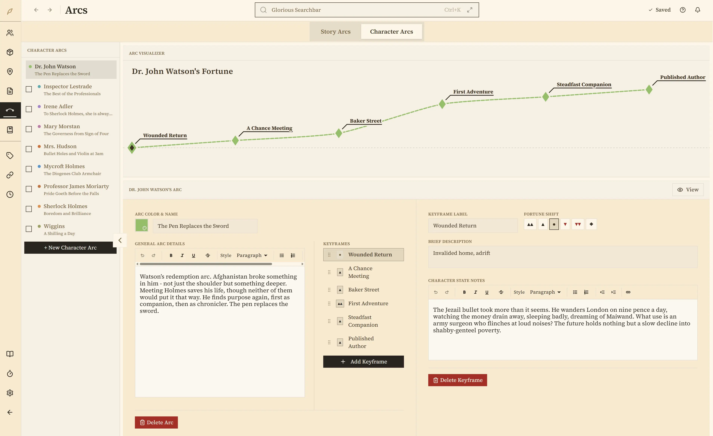

Write Your Novel.
Organize Your World.
“Was his name Aldric or Aldrick?”
Your manuscript and your worldbuilding live in one app. Write, search, visualize, and never lose track of your story again.
Already decided? Buy Penpoint — $40

The problems every writer faces:
“I write in one app and plan in another.”
Switching between your manuscript editor and your worldbuilding notes, every single session.
“Wait — what was his name? And who has the sword?”
Forgetting character details and losing track of possessions buried chapters ago.
“I can’t visualize how everyone connects.”
Complex character webs that won't fit in your head.
“My notes are everywhere.”
Scattered across apps, spreadsheets, and sticky notes.
Penpoint organizes your story into five simple categories:
And then connects them—so renaming your protagonist doesn't break fifty pages of notes.
Write your book. Know your world. One app.
Your manuscript lives alongside your characters, locations, and worldbuilding. Write a chapter, check a character's eye color, keep writing, without leaving Penpoint. Import existing manuscripts from Word, EPUB, Markdown, or plain text with automatic chapter detection. Then scan your chapters to auto-detect every character, location, and item in your prose.
It's all coming together.
Characters link to chapters. Items belong to owners. Locations nest inside each other. As you fill in the details, Penpoint weaves them into a single cross-referenced world.
Your ideas will find you.
Introducing the Glorious Searchbar. Instantly search every character, location, item, chapter, and note in your project. Stop scrolling through documents. Just start typing and the Glorious Searchbar works its magic.
Visualize how they all connect.
Complex character webs refuse to stay in your head. See who's connected to whom with visual relationship mapping.
One click to see it all.
Tags are your power tools. Tag anything: characters, locations, items, chapters, notes. Click a tag and see everything connected to it in one place. Your factions, your plotlines, your plot twists, organized.
Let your story arcs be arcs.
Plot structure lives in your head until you see it. Penpoint turns your narrative into visual curves; main arcs, subplots, and character fortunes. See where your story rises and where it falls.
Your stories are yours, forever.
Your work belongs to you, not us. No subscriptions, no cloud accounts, no AI touching your prose, no lock-in, ever. Export everything to document form whenever you want.
One license, every platform.
Penpoint is THE writing app. If you want something that provides some structure for your planning, then acts as a quiet companion for the writing, this is it. From world building, to character creation, to helping you easily find things within your manuscript, to just sitting down and writing the damn thing… this is a writer's best friend.
“This is a writer’s best friend.”
“It’s everything you need, with a UI that doesn’t distract from actually writing. It’s better than everyone else because it’s cleaner, easier, stronger, and actually written for authors, by authors.”
“Penpoint lets me work the way I like and the tools are there waiting for me when I need them. The Flowstate aspect of Manuscript mode is a game changer!”
“The most approachable writing tool, that cuts no corners!”
“It combines all the best features available elsewhere with interesting and new ideas. It’s the perfect writer’s companion.”
“Having a program that functions as an organization tool and a writing tool helps keep my writing on track. Being able to link significant places, relationships, character arcs and tie them in with the chapters I write is a huge time saver. I highly recommend.”
“Instead of ideas being scattered across Google Docs, notes on an iPad, and sticky notes, everything stays organized and centralized. The interface is clean, simple, and very easy to use, making it quick to focus on writing rather than figuring out complicated features.”
The features you actually need
Click any feature to explore
Wondering how Penpoint stacks up against Scrivener, Campfire, or Dabble?
See the full comparison →Frequently Asked Questions
What is Penpoint?
A desktop app where writers write their manuscript and organize their world in one place. Write your entire book in a clean editor, track characters, locations, and relationships with visual tools, and search everything instantly.
Who is Penpoint for?
Writers, mostly. Fiction authors are the core audience, but people also use it for nonfiction, historical research, and tabletop RPG campaigns. It works fine with a handful of characters or a cast of hundreds.
Can I import my existing work?
Manuscripts: Yes. Import from Word (.docx), EPUB, Markdown, or plain text. Penpoint detects your chapter boundaries automatically and splits the manuscript for you. Then use the Chapter Scanner to auto-detect characters, locations, and items in your prose.
Worldbuilding data: You can import worldbuilding from a Markdown file formatted for Penpoint. It may require some restructuring, but it works. Beyond that, the Chapter Scanner auto-detects proper nouns in your manuscript and offers to import them as characters, locations, or items, so your prose builds your worldbuilding for you.
What makes Penpoint different from Scrivener, Campfire, or Dabble?
Scrivener is great for organizing a manuscript but doesn't have worldbuilding tools. Campfire has worldbuilding, but no manuscript editor. Dabble lands somewhere in between with limited worldbuilding. Penpoint is the one that does both: write your book and organize your world in the same app. See the full comparison →
Does Penpoint work offline?
Completely. Everything lives on your computer. No internet, no account, no cloud, no AI. Your story details don't leave your machine unless you export them yourself.
Does Penpoint have a spellchecker?
Yes, and it works completely offline. Penpoint ships with a spellchecker supporting 60 languages. Download whichever you need from Settings. Every character, location, and item name you create is automatically added to the dictionary, so your invented names never show up as misspelled.
What languages does Penpoint support?
The interface is in English. You can write your manuscript in any language and the spellchecker supports 60+ languages you can download from Settings. The one caveat is the Chapter Scanner, which only works with English text right now. Everything else works in whatever language you write in. Multi-language interface support is planned.
What is Flowstate?
A writing mode built right into the manuscript editor. Start a timed writing sprint and sentences lock behind you as you type. You literally can't go back and rewrite the same paragraph for the tenth time. Timed cycles alternate between forward-only writing and editing windows. It's not for everyone, but if you tend to edit too much and write too little, it might be exactly what you need.
Can I manage multiple books or a series?
Yes, there's a multi-book library built in. Duplicate a book to start the next installment and choose what carries over: keep your locations but start fresh on characters, or bring everything with you. Filter by installment, or view everything across the whole series at once.
How much does Penpoint cost?
$40, once. No subscription. Your license covers Windows, macOS, and Linux — buy it once, use it everywhere.
What platforms does Penpoint support?
Windows, macOS (Intel and Apple Silicon), and Linux. It's a native desktop app, not a web app running in a browser. There are no plans for a web version or mobile apps for iOS or Android.
What is a character bible or story bible?
A character bible is a reference sheet for every character in your story: names, traits, relationships, backstories, all of it. A story bible is the same idea but for your whole world: locations, timelines, plot threads, worldbuilding. Some people call them series bibles. Penpoint is both. Your characters and your world, organized and searchable in one place.
Ready to write your story?
No account needed. Your data stays on your computer.
Try Penpoint FreeAlready decided? Buy Penpoint — $40
Join our Discord